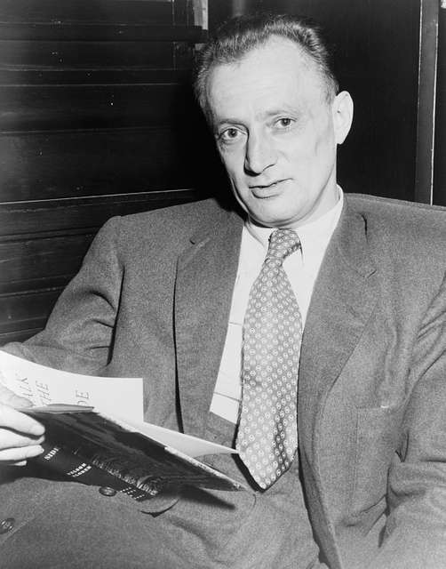

을유 시리즈
-
 책을 쓰는 과학자들
책을 쓰는 과학자들#5. “새들은 다 어디로 갔을까?”
디클로로디페닐트리클로로에탄dichlorodiphenyltrichloroethane(줄여서 DDT)은 엄청난 살충 효과가 입증된 물질이다. 유럽에서는 DDT가 도입된 후 치명적인 질병인 발진 티푸스 환자가 크게 줄었고 세계보건기구는 말라리아를 옮기는 모기를 박멸할 일차적 방안으로 DDT를 채택했다. 그러나 『침묵의 봄』이 출간된 후, DDT 사용을 광범위하게 제한하는 정치적 반응이 일어났다. 출간 이듬해인 1963년에 당시 미국 대통령은 이 책이 전하는 메시지가 타당한지 조사하라는 지시를 내렸고, 그 결과 미국에서는 1972년부터 DDT 사용이 사실상 금지됐다. 이후 DDT 사용을 제한하는 분위기는 전 세계로 확산됐다. DDT의 발명이 2500만 명 가까운 목숨을 구했다고 추정되므로, 『침묵의 봄』이 아니었다면 더 많은 생명을 구할 수 있었으리라고 믿는 사람들도 있다. 지금도 매년 100만 명 이상이 말라리아로 목숨을 잃고 있으며, 그중 상당수가 어린이다.
-
게르하르트 리히터
#5. “아름다운 행운의 빛” 컬러패널
리히터는 뒤셀도르프에 있는 페인트 전문점 조넨헤어초크Sonnenherzog에서 그림 도구를 구입했다. 그리고 그곳에 전시된 페인트 색상표를 보고 새로운 그림에 대한 영감을 얻었다. 그런 점에서 컬러패널은 이러한 페인트 색상표를 확대한 것으로도 읽을 수 있다. 그러나 리히터는 사진 이미지와 달리 회화적 모티브에서 이러한 미디어적 맥락을 주제화하지 않았다. 사진 이미지의 경우 채색한 텍스트 조각을 통해 이미지 템플릿의 출처를 밝히는 수많은 예가 있지만,
-
 나이 든다는 것에 관하여
나이 든다는 것에 관하여#5. 내려놓고 있는 그대로 받아들이기
내려놓는 것은 이별하는 마음으로 살아가는 삶에서 중요한 주제다. 예전이었다면 극복할 수 있었거나 지나치게 과했던 우리 자신을 향한 요구 사항들을 이제는 감당할 수 없게 되었다. 이러한 것들을 가벼운 마음으로, 어쩌면 아쉬운 마음으로 내려놓아야 한다. 일상생활의 측면에서 볼 때 내려놓기라는 주제는 신체의 활동성을 통해 쉽게 확인할 수 있다. 이를
-
연애편지
#5. 보부아르가 보낸 마지막 편지
매우 소중한 당신. 어떤 편지도 부치지 않고, 어떤 편지도 오지 않는 영원 같은 시간이 흘렀다.사르트르는 놀랍도록 잘 지내고 있어요. 몸이 무척 말랐어요(엄격한 식이요법의 결과지요). 보스트는 다시 보았는데, 올가는 아직 만나질 못했어요. 상황은 여전해요. 그녀는 헛소리하고 광분하여 펄펄 뛰고 때로 폭력을 쓰기도 해요. 그녀는 끔찍하게 불행해하지만, 그녀에게도 책임은 있지요.